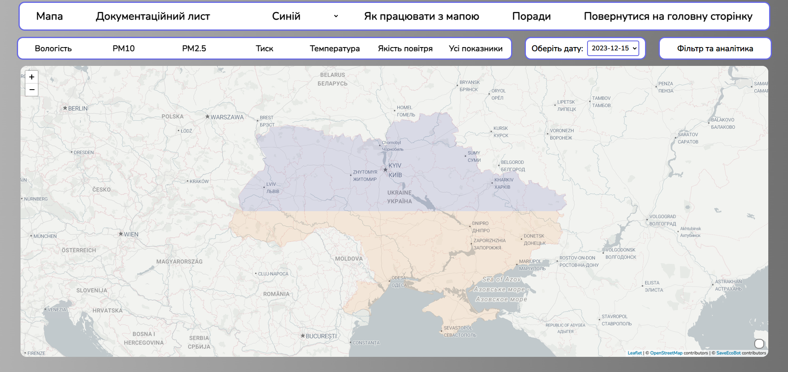
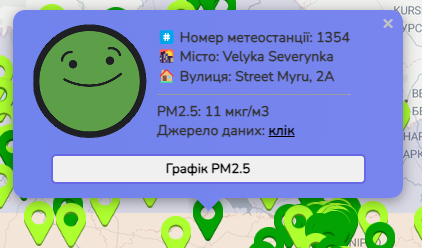

Головне меню - Випускна робота на тему
Вплив якості повітря на людину.
Інформаційна карта України
При запуску мапи ви, спочатку, побачите лише навігаційну панель, біологічні показники та пусту мапу:
Для того, щоб розпочати працювати з програмою, ви маєте обрати будь-який з показників, який вам заманеться, та якщо потрібно, змінити дату відображення. Наприклад, візьмемо інформацію за перше листопада 2023 року, про вологість. Застосунок покаже нам наступну картинку:
Тут ви зможете побачити велику кількість метеостанцій, які відображують інформацію, та зрозуміти, що значать ті чи інші кольори за допомогою легенди, яка розташована у правому нижньому куті мапи.
Натиснувши на будь-яку з точок, можна побачити номер станції, місто, вулицю та обраний показник, як на фото нижче:

Також, якщо ви захочете обрати режим «Усі показники», то при натисненні вам виведе інформацію про кожен з показників, наприклад:
Окрім цього, в програмі реалізована додаткова функція, яка активується при кліку на навігаційній панелі на кнопку "Поради". У цьому варіанті, після натиснення, ви зможете натиснути на будь-яку точку (не метеостанцію, а просто будь-яке місце на карті) та побачити, які поради вам можна реалізувати щоб почувати себе комфортно, при цьому програма знаходить найближчу метеостанцію до обраної точки та аналізує її дані. Якщо обраний показник (наприклад, вологість, рівень забруднення повітря тощо) вказує на задовільний стан, користувач отримає повідомлення, що усе в порядку.
У випадку, якщо вимірювані показники вказують на неприйнятний стан атмосфери, користувач буде проінформований про це, а також отримає корисні поради та рекомендації. Наприклад, у випадку високого рівня забруднення повітря або низької вологості можуть бути запропоновані поради щодо використання захисних масок або зволоження повітря в приміщенні для збереження здоров'я.
Також, якщо ви захочете обрати режим «Усі показники», то при натисненні вам виведе інформацію про кожен з показників, наприклад:

Також ви могли побачити кнопку "Графік (показник)". При її натисненні, ви зможете побачити графік за минулі дні по цій метеостанції та по цьому показнику, наприклад:

Окрім цього, у комплектації програми є сайт з документаційним листом та головною сторінкою, з якими можна ознайомитися за допомоги навігаційної панелі.